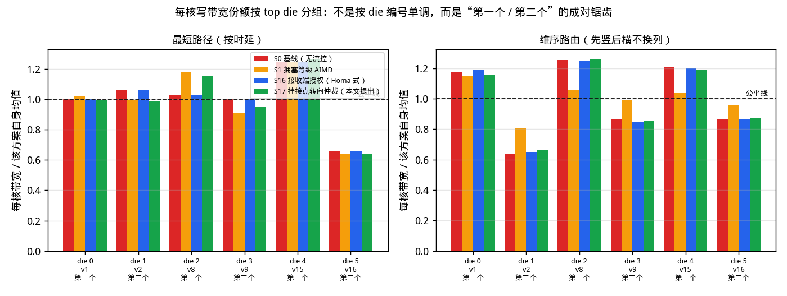
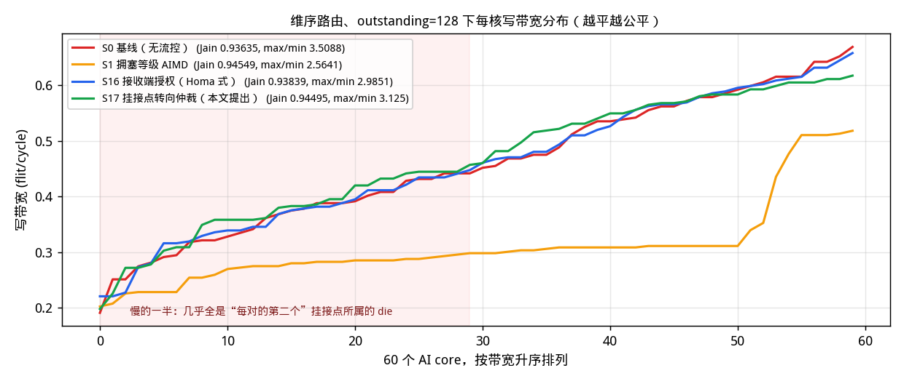
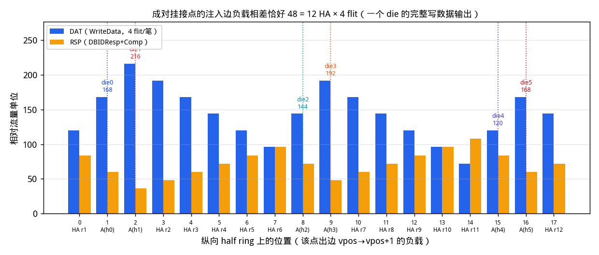
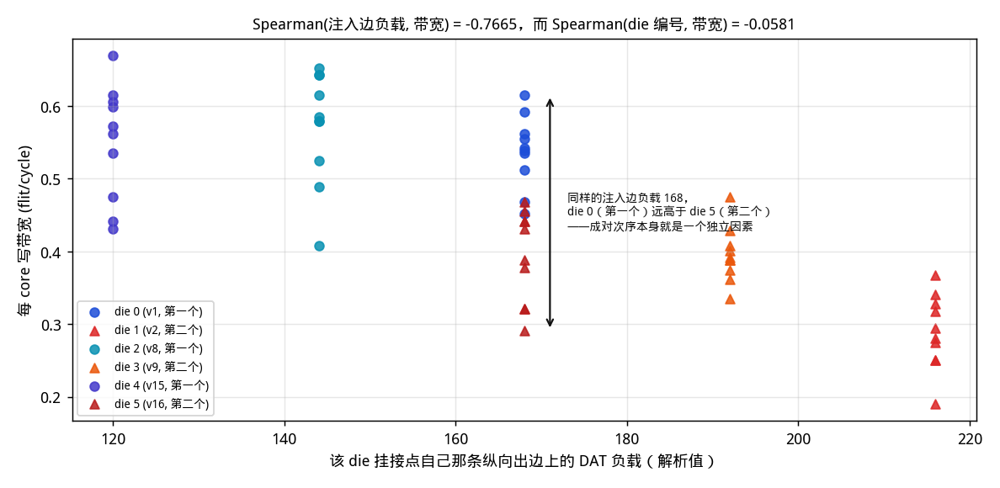
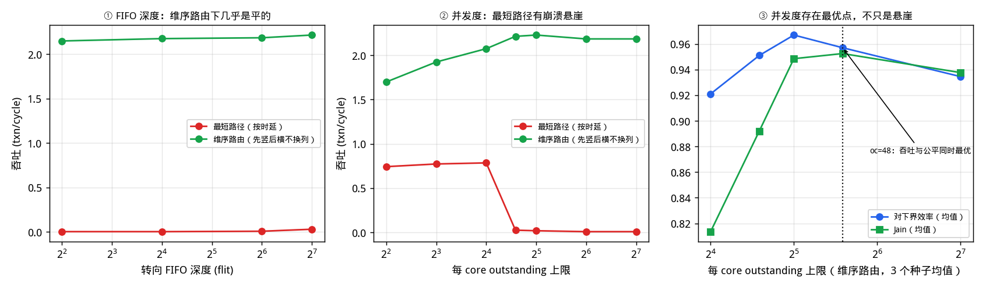

拓扑：6 个 top die（每个 20 节点、双平面、
双向 full ring：10 个 AI core + 8 个 D2D bridge + 2 个非终端节点）
+ 48 条 D2D 链路
+ 1 个 bottom die（96 个 HA，12 行 × 8 列；
6 条横向 + 8 条纵向单向 half ring）。
workload：60 个 AI core 均匀写 96 个 HA，
每 core 50 笔 WriteNoSnp、每笔 4 个 WriteData
flit，共 3,000 笔事务；每 core outstanding 上限
128。
DBIDResp 确实是天然的 GRANT，完成端（HA）也确实坐在
瓶颈纵环上，看起来是理想的控制点。但实测在 overcommit=32
下 2,997 笔授权是立即发出的，只有 3 笔真正被节流——
预算从来没有绑定，所以结果与基线基本相同
（Jain 0.93839 vs 0.93635）。
把 overcommit 压小到会绑定的程度，公平性反而急剧恶化
（overcommit=4：Jain 0.53884、
max/min 50.0）。
原因是控制点不在瓶颈上：失衡发生在注入侧
（挂接点抢纵环槽位），而 S16 管的是接收侧灌入量。
扣住占优 die 的授权只是让它手上没数据，
在环优先会立刻把空出的槽位交给下一个过路 flit，starved 的挂接点拿不到。
接收端驱动的拥塞控制能管“谁往瓶颈里灌多少”，
管不了“瓶颈处的仲裁不公”——单环研究里两者恰好重合，这里分离了。bottom die 的结构是理解全部结论的前提。每一列是一条单向纵向 half ring，18 个节点按行进顺序排列：12 个 HA 与 6 个挂接点交错， 6 个挂接点成对出现在 3 个行间隙里（vpos 1&2、8&9、15&16）。 两个关键结构事实：

| 项目 | 取值 | 说明 |
|---|---|---|
| top die 数量 | 6 | 每个是 20 节点、双平面、双向 full ring |
| AI core | 60 | 每 top die 10 个，环序号 0,2,…,18 |
| D2D bridge | 48 | 每 top die 8 个，环序号 [1, 3, 5, 7, 11, 13, 15, 17]，依次对应 bottom die 第 0–7 列 |
| 非终端节点 | 12 | 每 top die 的 9、19：只转发，不发起也不接收 |
| HA（内存） | 96 | bottom die，12 行 × 8 列，全部在纵向 half ring 上 |
| 挂接点 | 48 | 6 条横向 half ring × 8 列；既在横环上也在该列纵环上，兼作转向点与 D2D 落地点 |
| 节点总数 | 264 | 6×20 + 96 + 48；8 列 × 18 = 144 = 96 + 48，自洽 |
| 有向链路 | 768 | top 480 / D2D 96 / 横 48 / 纵 144 |
| CHI VC | REQ / RSP / DAT | 三条独立 VC；每条有向链路每 VC 每拍 1 flit（σ=1） |
| 每 core outstanding | 128 | REQ 已注入、Comp 未回收的事务数上限（题目规定 128；见 §4.2，这个取值并非最优） |
| 写事务 | REQ×1 → DBIDResp×1 → WriteData×4 → Comp×1 | CHI WriteNoSnp 四拍握手 |
| 每 core 事务数 | 50 | 均匀散布到全部 96 个 HA，共 3,000 笔 |
| 转向 FIFO 深度 | 64 | 横↔纵换环时经过；见 §4.1——维序路由下 4 flit 即够，此处取大值只为留出余量 |
| D2D FIFO 深度 | 128 | 跨 die 时经过 |
| 上下环端口 | 1 / 站点 / 平面 | 注入队列 8 深，落地队列 4 深，PE 每拍取 1 flit |
| top die 环内链路 | 延迟 (cycle) | 两端角色 |
|---|---|---|
| 0 ↔ 1 | 2 | core→bridge |
| 1 ↔ 2 | 2 | bridge→core |
| 2 ↔ 3 | 2 | core→bridge |
| 3 ↔ 4 | 3 | bridge→core |
| 4 ↔ 5 | 1 | core→bridge |
| 5 ↔ 6 | 3 | bridge→core |
| 6 ↔ 7 | 1 | core→bridge |
| 7 ↔ 8 | 1 | bridge→core |
| 8 ↔ 9 | 2 | 含非终端 9/19 |
| 9 ↔ 10 | 4 | 含非终端 9/19 |
| 10 ↔ 11 | 1 | core→bridge |
| 11 ↔ 12 | 1 | bridge→core |
| 12 ↔ 13 | 3 | core→bridge |
| 13 ↔ 14 | 1 | bridge→core |
| 14 ↔ 15 | 3 | core→bridge |
| 15 ↔ 16 | 2 | bridge→core |
| 16 ↔ 17 | 2 | core→bridge |
| 17 ↔ 18 | 2 | bridge→core |
| 18 ↔ 19 | 3 | 含非终端 9/19 |
| 19 ↔ 0 | 3 | 含非终端 9/19 |
| 其他链路 | 延迟 (cycle) | 说明 |
|---|---|---|
| bottom die 横向 half ring | 1 | 单向，8 个挂接点成一个闭环 |
| bottom die 纵向 half ring | 1 | 单向，18 个节点成一个闭环（12 HA + 6 挂接点） |
| D2D 跨 die | 4 | SerDes + 跨时钟域，双向各一条 |
两个平面只存在于 top die；D2D 与 bottom die 的链路为两个平面共享。 平面选择按“最少占用”做负载均衡。三种路由策略在同一份拓扑上的对比：
| 路由策略 | 下界 (cycle) | 上限 txn/cycle | 平均跳数 | 纵环 DAT 跳/笔 | 横环 DAT 跳/笔 | top 环 DAT 跳/笔 | 纵环单链路 DAT 最大/平均 | 集中度 |
|---|---|---|---|---|---|---|---|---|
| 最短路径（按时延） | 3000 | 1.000 | 13.59 | 35.64 | 9.95 | 4.79 | 3000 / 742.5 | 4.04× |
| 最短路径（按跳数） | 2452 | 1.224 | 13.26 | 35.64 | 7.02 | 6.38 | 2452 / 742.5 | 3.30× |
| 维序路由（先竖后横不换列） | 1307 | 2.295 | 14.93 | 35.64 | 0 | 20.09 | 1184 / 742.5 | 1.59× |
最忙的几条链路，直接印证上面的集中度：
| 路由 | 所属织物 | VC | 链路 | 该链路 flit 数 |
|---|---|---|---|---|
| 最短路径（按时延） | v | DAT | A(h0,c0)@v1 → A(h1,c0)@v2 | 3,000 |
| 最短路径（按时延） | v | DAT | A(h2,c0)@v8 → A(h3,c0)@v9 | 2,592 |
| 最短路径（按时延） | v | DAT | A(h5,c0)@v16 → HA(r12,c0)@v17 | 2,396 |
| 维序路由（先竖后横不换列） | v | DAT | A(h1,c0)@v2 → HA(r2,c0)@v3 | 1,184 |
| 维序路由（先竖后横不换列） | v | DAT | A(h1,c7)@v2 → HA(r2,c7)@v3 | 1,152 |
| 维序路由（先竖后横不换列） | v | DAT | A(h1,c6)@v2 → HA(r2,c6)@v3 | 1,152 |
最短路径下三条最忙链路全在第 0 列， 最忙那条正好等于全部 3,000 笔事务的 DAT； 维序路由下最忙的链路分散在各列，且恰好是 每对里第二个挂接点的注入边（A(h1)@v2 → HA(r2)），这就是 §6 的根因。
对 n 个 core 的带宽 x1…xn：
J(x) = ( Σxi )2 / ( n · Σxi2 )
它就是算术平均的平方除以平方平均，等价于 1 / (1 + CV2)，其中 CV 是变异系数。因此：
带宽的测量窗口。闭合批次里每个 core 最终都会发出同样多的
WriteData flit，跑完再数必然相等、毫无信息。因此统计窗口取
t_fair = 第一个 core 把自己的活干完的时刻；
在此之前全部 60 个 core 都在争抢同一批资源，
这段区间内的每核 flit 数才是真实份额。
维序路由下，3,000 笔事务的 makespan 下界：
| 下界 | cycle | 含义 |
|---|---|---|
| LB_link | 1184 | 最忙的那条有向链路、单条 VC 的容量（DAT 1184 / RSP 606 / REQ 296，取最大） |
| LB_port | 250 | 每站点一个上下环端口，三条 VC 相加共享 |
| LB_fabric | 1307 | 某层织物的总 flit·跳 ÷ 该层链路数（top 220，d2d 219，v 1307） |
| LB_txn | 175 | 单笔事务四拍握手的串行链 |
| 下界 | 1307 | 以上四者取最大 |
本例的约束来自 LB_fabric，即纵向 half ring 这一层织物的总容量 ——144 条纵向有向链路要承载全部写数据。 三条 CHI VC 相互独立，所以链路下界取各 VC 的最大值而不是求和； 上下环端口每站点只有一个、被三条 VC 共享，所以端口下界要把各 VC 相加。
讨论公平性之前必须先确认织物能不能跑。这里有三个旋钮， 但只有两个真正重要。
| 路由 | 转向 FIFO 深度 | D2D FIFO 深度 | 状态 | 完成事务 | makespan | 吞吐 txn/cycle | 偏转次数 | 实测峰值占用 |
|---|---|---|---|---|---|---|---|---|
| 最短路径（按时延） | 4 | 8 | 拥塞崩溃 | 70 | 20289 | 0.004 | 303,652 | 4 |
| 最短路径（按时延） | 16 | 32 | 拥塞崩溃 | 67 | 20285 | 0.003 | 349,894 | 16 |
| 最短路径（按时延） | 64 | 128 | 拥塞崩溃 | 160 | 20336 | 0.008 | 417,527 | 64 |
| 最短路径（按时延） | 128 | 256 | 拥塞崩溃 | 634 | 20793 | 0.030 | 297,286 | 128 |
| 维序路由（先竖后横不换列） | 4 | 8 | 完成 | 3,000 | 1396 | 2.149 | 3,559 | 4 |
| 维序路由（先竖后横不换列） | 16 | 32 | 完成 | 3,000 | 1379 | 2.175 | 2,587 | 16 |
| 维序路由（先竖后横不换列） | 64 | 128 | 完成 | 3,000 | 1373 | 2.185 | 2,664 | 64 |
| 维序路由（先竖后横不换列） | 128 | 256 | 完成 | 3,000 | 1354 | 2.216 | 2,643 | 128 |
| 路由 | 每 core outstanding | 状态 | makespan | 对下界效率 | 吞吐 txn/cycle | Jain | max/min | 偏转次数 |
|---|---|---|---|---|---|---|---|---|
| 最短路径（按时延） | 4 | 完成 | 4042 | 74% | 0.742 | 0.8281 | 6.25 | 7,750 |
| 最短路径（按时延） | 8 | 完成 | 3884 | 77% | 0.772 | 0.7889 | 6.25 | 16,355 |
| 最短路径（按时延） | 16 | 完成 | 3823 | 78% | 0.785 | 0.9306 | 3.85 | 21,212 |
| 最短路径（按时延） | 24 | 拥塞崩溃 | 20658 | 15% | 0.025 | 0.9015 | 5.20 | 341,646 |
| 最短路径（按时延） | 32 | 拥塞崩溃 | 20586 | 15% | 0.018 | 0.8711 | 5.00 | 476,168 |
| 最短路径（按时延） | 64 | 拥塞崩溃 | 20336 | 15% | 0.008 | 0.6816 | ∞ | 417,527 |
| 最短路径（按时延） | 128 | 拥塞崩溃 | 20336 | 15% | 0.008 | 0.6816 | ∞ | 417,527 |
| 维序路由（先竖后横不换列） | 4 | 完成 | 1766 | 74% | 1.699 | 0.9949 | 1.32 | 719 |
| 维序路由（先竖后横不换列） | 8 | 完成 | 1559 | 84% | 1.924 | 0.9016 | 4.55 | 1,170 |
| 维序路由（先竖后横不换列） | 16 | 完成 | 1446 | 90% | 2.075 | 0.8162 | 3.33 | 1,943 |
| 维序路由（先竖后横不换列） | 24 | 完成 | 1355 | 96% | 2.214 | 0.8951 | 2.63 | 1,980 |
| 维序路由（先竖后横不换列） | 32 | 完成 | 1346 | 97% | 2.229 | 0.9547 | 2.08 | 2,030 |
| 维序路由（先竖后横不换列） | 64 | 完成 | 1373 | 95% | 2.185 | 0.9364 | 3.51 | 2,664 |
| 维序路由（先竖后横不换列） | 128 | 完成 | 1373 | 95% | 2.185 | 0.9364 | 3.51 | 2,664 |
单种子容易被噪声误导，所以对关键取值做了 3 个种子的重复 （维序路由；★ 为推荐取值）：
| 配置 | 最差 Jain | 平均 Jain | 最差 max/min | 最差效率 | 平均效率 |
|---|---|---|---|---|---|
| S0 基线，oc=16 | 0.8112 | 0.8136 | 3.846 | 91.3% | 92.1% |
| S0 基线，oc=24 | 0.8887 | 0.8921 | 2.778 | 94.3% | 95.1% |
| S0 基线，oc=32 ★ | 0.9422 | 0.9485 | 2.273 | 95.6% | 96.7% |
| S0 基线，oc=48 | 0.9499 | 0.9525 | 3.175 | 94.0% | 95.7% |
| S0 基线，oc=128 | 0.9329 | 0.9376 | 3.175 | 90.6% | 93.5% |
| S1 AIMD，oc=16 | 0.8138 | 0.8172 | 3.571 | 88.3% | 89.8% |
| S1 AIMD，oc=24 | 0.8961 | 0.9038 | 2.778 | 94.0% | 94.9% |
| S1 AIMD，oc=32 ★ | 0.9493 | 0.9546 | 2.273 | 94.9% | 95.6% |
| S1 AIMD，oc=48 | 0.9388 | 0.9468 | 2.667 | 88.6% | 93.7% |
| S1 AIMD，oc=128 | 0.9374 | 0.9443 | 2.532 | 90.7% | 94.5% |

纵轴是份额（每核带宽 ÷ 该方案自身均值），
不是绝对带宽：不同方案的公平窗口 t_fair 长度不同，
绝对值不可横向比较，而份额正是 Jain 所度量的东西。
右图可以直接看出 S1（橙）把饿死的 die 1 从 0.63 抬到 0.81、
同时压低领先者，这就是它 Jain 更高的来源；
S16（蓝）与 S0（红）几乎重合，说明它没有生效。
| 方案 | 状态 | 完成事务 | makespan | 对下界效率 | Jain | max/min | CoV | 每核带宽区间 | 偏转次数 |
|---|---|---|---|---|---|---|---|---|---|
| S0 基线（无流控） | 拥塞崩溃 | 160/3,000 | 20336 | 15% | 0.6816 | ∞ | 0.683 | 0.0000 ~ 0.5161 | 417,527 |
| S1 拥塞等级 AIMD | 拥塞崩溃 | 147/3,000 | 20494 | 15% | 0.6565 | ∞ | 0.723 | 0.0000 ~ 0.4800 | 390,973 |
| S16 接收端授权（Homa 式） | 拥塞崩溃 | 160/3,000 | 20336 | 15% | 0.6816 | ∞ | 0.683 | 0.0000 ~ 0.5161 | 417,527 |
| S17 挂接点转向仲裁（本文提出） | 拥塞崩溃 | 197/3,000 | 21009 | 14% | 0.6629 | ∞ | 0.713 | 0.0000 ~ 0.5250 | 517,068 |
| 方案 | 状态 | 完成事务 | makespan | 对下界效率 | Jain | max/min | CoV | 每核带宽区间 | 偏转次数 |
|---|---|---|---|---|---|---|---|---|---|
| S0 基线（无流控） | 完成 | 3,000/3,000 | 1373 | 95% | 0.9364 | 3.51 | 0.261 | 0.1906 ~ 0.6689 | 2,664 |
| S1 拥塞等级 AIMD | 完成 | 3,000/3,000 | 1359 | 96% | 0.9455 | 2.56 | 0.240 | 0.2021 ~ 0.5181 | 2,244 |
| S16 接收端授权（Homa 式） | 完成 | 3,000/3,000 | 1373 | 95% | 0.9384 | 2.99 | 0.256 | 0.2204 ~ 0.6579 | 2,685 |
| S17 挂接点转向仲裁（本文提出） | 完成 | 3,000/3,000 | 1421 | 92% | 0.9449 | 3.12 | 0.241 | 0.1975 ~ 0.6173 | 2,568 |

曲线越平越公平。四条曲线的左半段几乎全部由 “每对里第二个挂接点”所属的 die（1、3、5）的 core 构成， 这直接引出下一节的根因。
原假设：横环 t 在所有列切在同一纵向位置， 所以 top die t 的偏置是同相的， 带宽应当按 die 编号（vpos 1,2,8,9,15,16）单调排序。 同相这一点是对的，单调这一点是错的：
| 候选解释变量 | Spearman(变量, 每核带宽) | 读法 |
|---|---|---|
| 行间隙内是第几个挂接点 | -0.824 | 主因：第二个永远在第一个的正下游 |
| 挂接点出边的 DAT 负载 | -0.766 | 主因的物理量：注入时必须挤进这条边 |
| 行间隙编号（0/1/2） | 0.192 | 次要：越靠下游越好，上游 HA 已经吸收了一部分流量 |
| core 在 top 环上的序号 | 0.089 | 几乎无关——top 环容量过剩，片内位置不构成瓶颈 |
| top die 编号 | -0.058 | ≈0，计划中的假设被否定 |
| 纵环插入位置 vpos | -0.058 | ≈0，与 die 编号同序，单调性被成对结构打断 |
每个行间隙放两个相邻的挂接点。 第二个永远在第一个的正下游，于是它注入时要挤进的那条纵向出边上， 已经载着第一个挂接点全部的写数据流量。

| top die | 挂接点 vpos | 注入边 DAT 负载（解析） | 行间隙内次序 | 平均带宽 | 最小 | 最大 |
|---|---|---|---|---|---|---|
| die 0 | 1 | 168 | 第一个 | 0.5371 | 0.4515 | 0.6154 |
| die 1 | 2 | 216 | 第二个（下游） | 0.2896 | 0.1906 | 0.3679 |
| die 2 | 8 | 144 | 第一个 | 0.5716 | 0.4080 | 0.6522 |
| die 3 | 9 | 192 | 第二个（下游） | 0.3950 | 0.3345 | 0.4749 |
| die 4 | 15 | 120 | 第一个 | 0.5505 | 0.4314 | 0.6689 |
| die 5 | 16 | 168 | 第二个（下游） | 0.3936 | 0.2910 | 0.4682 |

四个部分按规格实现：检测（每站点每窗口统计上环失败与落环偏转，
等级 = min(7, 次数/8)）、传播（专用 3bit 广播总线，不占 NoC）、
反馈（每个源维护受控节点表，取其中最大等级）、
控制（终值 = level_of(自身失败 − 8×收到的最大净等级)，
对整数注入预算做 AIMD）。
唯一改动是受控节点表的构造：单环上是 (idx+dir) % n 走 hops 步，
这里改为沿路由的边表收集途经站点——机械替换，不是策略变化。
结果：Jain 0.93635 → 0.94549， max/min 3.5088 → 2.5641， makespan 1373 → 1359（略快）。 跨种子稳定，是三个方案里最可靠的。 局限在于 max 聚合让同一条纵环上的所有 core 收到相同的拥塞等级， 而真正要区别对待的是“同一行间隙里的第一个 vs 第二个”—— 所以它只能压掉一部分差距，不能对症。
WriteNoSnp 规定拿到 DBIDResp 之前不许发 WriteData，
所以完成端本来就握有“谁、何时可以把写数据放上织物”的权力，
基线只是一到就授权、把它浪费了。S16 不加报文、不加总线，
只改授权的时机与顺序（每完成端最多挂起 overcommit 个授权，
按已服务量最少优先）。在本拓扑上完成端（HA）还正好坐在瓶颈纵环上，
看起来是理想的控制点。
| overcommit | 状态 | makespan | Jain | max/min | CoV | 峰值挂起授权 | 峰值写缓冲 (flit) | 平均授权等待 |
|---|---|---|---|---|---|---|---|---|
| 4 | 完成 | 1527 | 0.5388 | 50.00 | 0.925 | 4 | 16 | 502.3 |
| 8 | 完成 | 1334 | 0.7175 | 25.00 | 0.627 | 8 | 32 | 341.8 |
| 16 | 完成 | 1356 | 0.8916 | 3.33 | 0.349 | 16 | 64 | 159.7 |
| 32 | 完成 | 1373 | 0.9384 | 2.99 | 0.256 | 32 | 128 | 30.3 |
| 64 | 完成 | 1373 | 0.9364 | 3.51 | 0.261 | 34 | 136 | 0.0 |
| 128 | 完成 | 1373 | 0.9364 | 3.51 | 0.261 | 34 | 136 | 0.0 |
t_fair 变短、每核样本变少，
而位置劣势依旧。既然根因是挂接点的转向 FIFO 被过路流量无限期压住， 最小的修法就是就地限制这个“无限期”：给转向 FIFO 一个有界耐心阈值， 连续被过路流量抢走槽位超过阈值后， 让一个过路 flit 在闩存里等一拍，把槽位交给转向 FIFO。
| 耐心阈值 (cycle) | 状态 | makespan | Jain | max/min | CoV | 让位次数 | 让位成功 | 闩存深度 (flit) |
|---|---|---|---|---|---|---|---|---|
| 0（等同基线） | 完成 | 1373 | 0.9364 | 3.51 | 0.261 | 0 | 0 | 0 |
| 1 | 完成 | 1356 | 0.9426 | 2.67 | 0.247 | 13,368 | 3,254 | 1 |
| 2 | 完成 | 1349 | 0.9395 | 2.99 | 0.254 | 10,739 | 1,990 | 1 |
| 4 | 完成 | 1410 | 0.9340 | 4.17 | 0.266 | 8,655 | 955 | 1 |
| 8 | 完成 | 1421 | 0.9449 | 3.12 | 0.241 | 7,339 | 398 | 1 |
| 16 | 完成 | 1354 | 0.9251 | 3.57 | 0.284 | 6,191 | 176 | 1 |
| 32 | 完成 | 1338 | 0.9341 | 3.17 | 0.266 | 5,326 | 103 | 1 |

硬件代价确实是三个方案里最小的：每挂接点每出环 1 个计数器 （共 361 个）+ 每出边 1 flit 闩存，没有广播总线、没有新报文。 它确实局部破坏了链路无缓存性，但破坏有界且可计量： 实测闩存深度 1 flit。 上表（单种子）看起来阈值 1 效果最好。 但这个结论经不起换种子。
| 配置 | 平均 Jain | 最差 Jain | 最差 max/min | 平均 CoV | 平均 makespan | ΔJain / Δmax-min | 判定 |
|---|---|---|---|---|---|---|---|
| oc=128，S0 | 0.93643 | 0.93005 | 3.390 | 0.2604 | 1392 | — | —（基准） |
| oc=128，S17 pat=1 | 0.91866 | 0.90842 | 4.762 | 0.2973 | 1375 | -0.01777 / +1.372 | 更差 |
| oc=128，S17 pat=2 | 0.92721 | 0.91946 | 4.444 | 0.2799 | 1398 | -0.00922 / +1.055 | 更差 |
| oc=128，S17 pat=8 | 0.94093 | 0.93640 | 3.509 | 0.2505 | 1394 | +0.00450 / +0.119 | 持平（噪声内） |
| oc=32，S0 | 0.94803 | 0.94258 | 2.174 | 0.2336 | 1382 | — | —（基准） |
| oc=32，S17 pat=1 | 0.94341 | 0.93689 | 2.632 | 0.2443 | 1359 | -0.00462 / +0.458 | 更差 |
| oc=32，S17 pat=2 | 0.94395 | 0.94207 | 2.500 | 0.2436 | 1362 | -0.00408 / +0.326 | 更差 |
| oc=32，S17 pat=8 | 0.94906 | 0.93955 | 2.381 | 0.2312 | 1367 | +0.00103 / +0.207 | 持平（噪声内） |
维序路由、outstanding=128， 3 个种子（目的地序列不同）：
| 方案 | 完成/总次数 | 最差 Jain | 平均 Jain | 最差 max/min | 最差效率 |
|---|---|---|---|---|---|
| S0 基线（无流控） | 3/3 | 0.9357 | 0.9369 | 4.082 | 89.0% |
| S1 拥塞等级 AIMD | 3/3 | 0.9455 | 0.9518 | 2.703 | 89.9% |
| S16 接收端授权（Homa 式） | 3/3 | 0.9357 | 0.9376 | 4.082 | 89.0% |
| S17 挂接点转向仲裁（本文提出） | 3/3 | 0.9297 | 0.9415 | 3.448 | 90.6% |
把上面全部结果综合成一个可落地的配置。 注意其中前三项都不是流控机制——它们是路由策略与两个已有参数的取值， 却贡献了绝大部分收益。
| 优先级 | 措施 | 类型 | 实测效果（维序路由，3 种子） | 硬件代价 |
|---|---|---|---|---|
| 1（必须） | 维序路由：在目的列自己的 bridge 上跨 die，之后只走该列纵环，不走横环 | 路由策略 | 从拥塞崩溃（完成 5%）变为全部完成、效率 95%；各自最优并发度下吞吐 0.785 → 2.229 txn/cycle（2.8 倍） | 无（只改路由表/路由函数） |
| 2（免费） | 每 core outstanding 由 128 降到 32 | 已有寄存器取值 | 平均效率 93.5% → 96.7%，Jain 0.93762 → 0.94847，最差 max/min 3.1746 → 2.2727 | 零 |
| 3（省成本） | 转向 FIFO 保持 4~8 flit，不必加深 | 缓冲配置 | 深度 4 与 64 的吞吐仅差 3.1% | 比原先设想的 64 flit 省 16 倍 |
| 4（可选） | S1 拥塞等级 AIMD | 流控机制 | 在 oc=32 基础上 Jain 0.94847 → 0.95465，最差 max/min 同为 2.2727 | 专用 3bit 广播总线 + 每源受控节点表 |
| 5（最彻底） | 改版图：分散成对挂接点，或让同间隙两条横环反向 | 拓扑布局 | 从结构上消除“第二个永远在下游”这一前提，预期可直接达标 | 版图改动，运行时零开销 |
| 代价项 | S0 | outstanding=32 | S1 | S16 | S17 |
|---|---|---|---|---|---|
| 专用广播总线 | 无 | 无 | 有（5,544 次广播，33,264 bit） | 无 | 无 |
| 新增报文类型 | 无 | 无 | 无（走专用总线） | 无（复用 DBIDResp 的时机） | 无 |
| 每站点状态 | 无 | 无（只改一个已有寄存器的取值） | 3bit×2 等级 + 受控节点表（平均 140.6 项）+ 预算寄存器 | 每 HA：授权计数 + 每请求方已服务计数 | 每挂接点每出环 1 个计数器（共 361 个） |
| 额外缓冲 | 无 | 无 | 无 | 完成端写缓冲，峰值 128 flit | 每出边 1 flit 闩存 |
| 是否破坏链路无缓存性 | 否 | 否 | 否 | 否 | 是，但有界（实测 1 flit） |
| 本拓扑实测收益（3 种子） | — | 吞吐与公平同时改善 | 公平小幅但可靠改善，吞吐持平 | 无效（预算几乎从不绑定） | 无效（噪声内，max/min 更差） |
PYTHONPATH=utils python3 utils/dse_stack_write_fair.py PYTHONPATH=utils python3 utils/gen_stack_write_report.py PYTHONPATH=utils python3 utils/verify_stack.py PYTHONPATH=utils python3 utils/verify_ring2_20.py
数据：results/dse_stack_write_fair.json
（仿真耗时 1182.7 s，K=50/core，
种子 0, 1, 2）与
results/dse_stack_oc_seeds.json。
四拍守恒、无 flit 丢失、makespan ≥ 下界、FIFO 占用有界、
维序路由不使用横环、S16 无预算时与 S0 逐位相同
等校验见 utils/verify_stack.py。